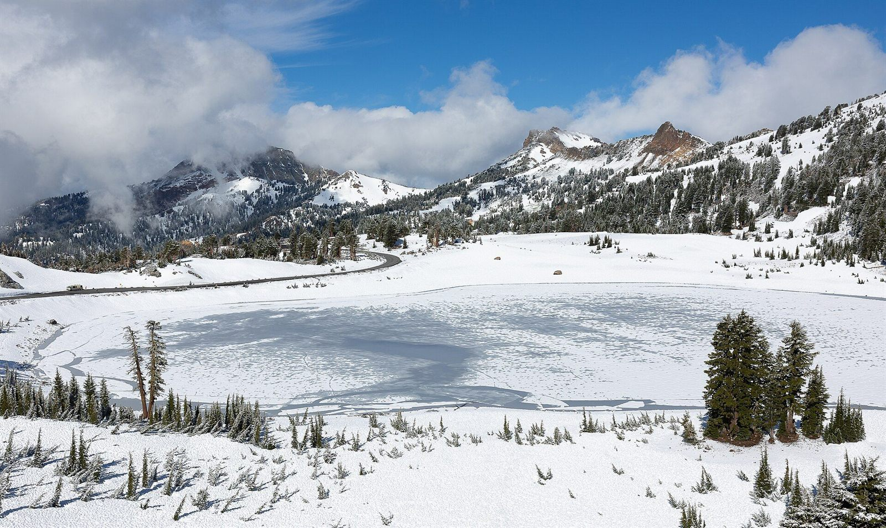
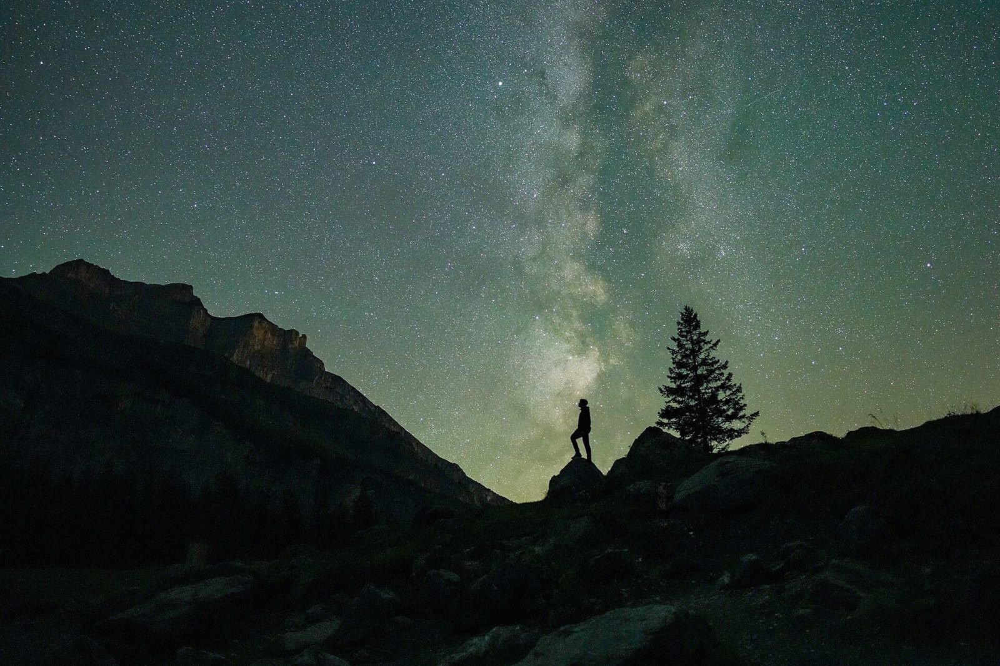

Five photographs, one day. Each one gives way to the next along a slanted edge as you scroll, the way a page turns, from first light to the Perseids.
Scroll

The lake holds the sky before the sun clears the ridge. Nothing moves yet but the colour.
By breakfast the water has turned from glass to blue, and the trail starts to climb.
Three peaks, no shade. The light is flat and honest; every scree line shows.
The summits burn for a few minutes after the valleys have gone grey.
Headtorch off. The day ends looking up, counting meteors over the ridge.